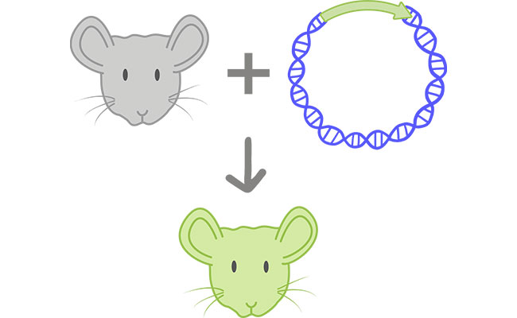

Though many trials have worked on animals such as cats, a trial done on monkeys at the Oregon Regional Primate Center was not as successful. This trial involved 20 gene-injected embryos and four births. One of the births contained two immunocompetent and bioluminescent twin monkeys who miscarried. Out of the other three monkeys born, one was immunocompetent and the other two were neither immunocompetent nor bioluminescent.
The Oregon Regional Primate Center trial was one of many failing trials due to the results not containing any living immunocompetent and bioluminescent animals. However, through many trial and error tests, scientists were able to find a stable immunocompetent gene by intertwining it with a bioluminescent gene in order to help test the functionality.
With this new technique for testing the functionality of gene transfers, science has had yet another breakthrough. With the help of these intertwining gene transfers, endless opportunities have been opened for further progression in all sides of science.
Another great example of the use of bioluminescent genes for scientific purposes was that of the study of optical imaging on transgenic mice. This research study on transgenic mice, transgenic meaning having outside genes artificially introduced to the organism, used bioluminescence to help gain better visual aids to distinguish immune cell types with the use of whole-body optical imaging.
With the help of the initial testing, using bioluminescence has come so far and allowed for lots of progress in the field of medical immunity and medical imaging. This research study is just another use for bioluminescent genes in the medical field. It will be amazing to see how bioluminescence continues to contribute to amazing medical discoveries and helps to save many lives along the way.